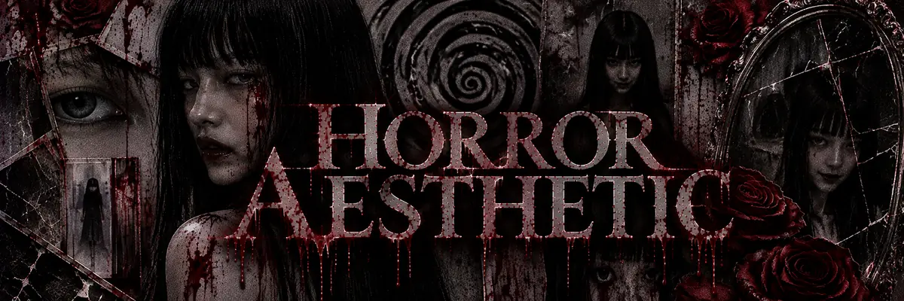
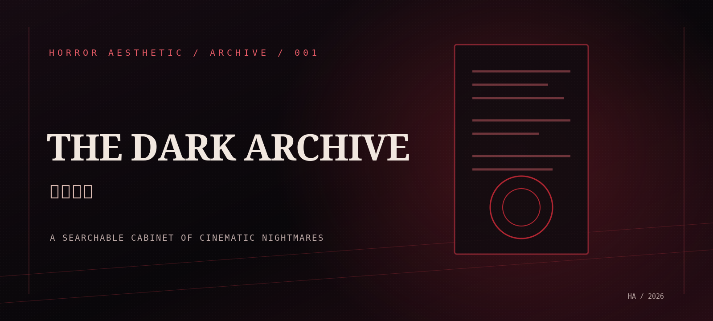

Books / Manga / Authors
Library of Horror
Библиотека тёмной литературы: от готической классики и weird fiction до современной манги, сплаттерпанка и телесного ужаса.

Graphic horror / MangaМиры
Миры
Junji Ito
Навязчивые формы, невозможные тела и бесконечные спирали

Weird fictionСтранная
Странная
проза
Литература необъяснимого

AuthorsАвторы
Авторы
тьмы
Классики и современные голоса
Reading rooms